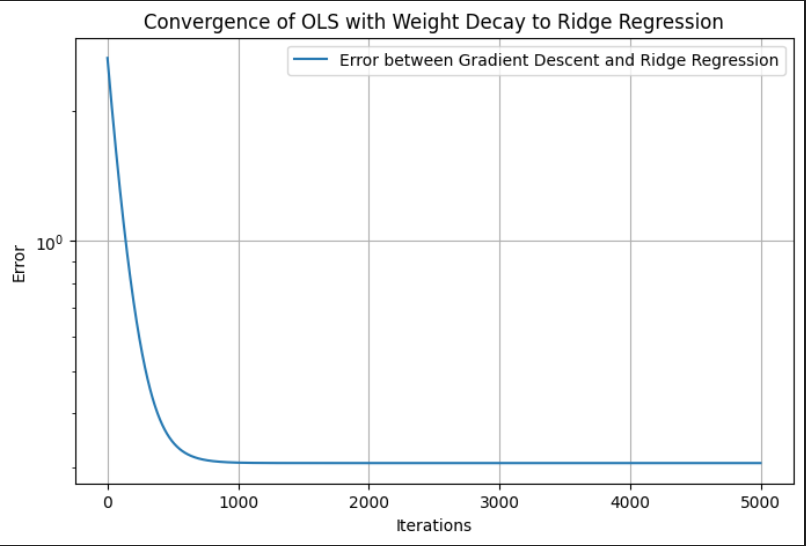
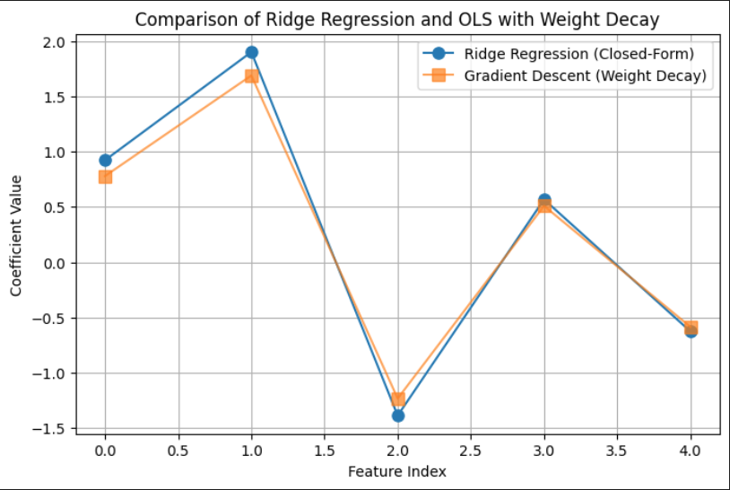

The bias-variance trade-off is an important concept used to optimize performance out of machine learning models. The total error of a model can be decomposed into Reducible error and Irreducible error respectively. Bias and variance are reducible errors. The irreducible error, often known as noise, is the error that can’t be reduced. The best models will always have an error which can’t be removed. Therefore, there is a trade-off between bias and variance to decrease the reducible error which essentially minimizes the total error. The total error can be expressed as the following:
Before dissecting the equation, lets delve deeper into bias and variance. Bias is the inability of the model to capture the true relationship. Models with high bias are too simple and fail to capture the complexity of the data, leading to higher training and test error. Models with low bias corresponds to a good fit to the training dataset. Variance refers to the amount an estimate would change on using a different training set. Models with high variance implies that the model doesn’t perform well on previously unseen data(testing data) even if it fits the training data well. In contrast, low variance implies that the model performs well on the testing set. The models that have low bias and high variance are known as overfitted models. The models that have high bias and low variance are known as underfitted models. The above equation suggests we need to find a model that simultaneosly achieves low bias and low variance. Variance is a non-negative term and bias squared is non-negative term, which implies that the total error can never go below irreducible error.
This graph suggests as model complexity increases, bias decreases faster than variance increases, reducing total error. Beyond a point, bias stabilizes while variance grows significantly, increasing total error and that point is the optimal point for minimum total error.
1.1 Derivation of the Equation
We have independent variables x that affects the value of a dependent variable y. Function f captures the true relationship between x and y. This is mathemetically expressed as: \[
y = f(x) + \epsilon
\] 𝜖 represents the random noise in the relationship between X and Y. 𝜖 has the following properties: \[
\mathbb{E}[\epsilon] = 0, \quad \text{var}(\epsilon) = \mathbb{E}[\epsilon^2] = \sigma_{\epsilon}^2
\] The goal here is to bring the prediction as close as possible to the actual value(y~f(x)) to minimise the error. Coming to the bias-variance decomposition equation; \[
\mathbb{E}[(y - \hat{f}(x))^2] = \text{bias}[\hat{f}(x)]^2 + \text{var}(\hat{f}(x)) + \sigma_\epsilon^2
\]
\(\mathbb{E}[(y - \hat{f}(x))^2]\): Mean Squared Error(MSE). The average squared difference of a prediction f̂(x) from its true value y.
\(\text{bias}[\hat{f}(x)] = \mathbb{E}[\hat{f}(x)] - f(x)\): The difference of the average value of prediction from the true relationship function f(x)
\(\text{var}(\hat{f}(x)) = \mathbb{E}[(\hat{f}(x) - \mathbb{E}[\hat{f}(x)])^2]\): The expectation of the squared deviation of f̂(x) from its expected value 𝔼[f̂(x)]
plugging this back into the equation for 𝔼[(f(x) −f̂(x))²], we arrive at our bias variance decomposition equation
\[
\mathbb{E}[(y - \hat{f}(x))^2] = \text{bias}[\hat{f}(x)]^2 + \text{var}(\hat{f}(x)) + \sigma_\epsilon^2
\]Let’s move on and discuss Bias-Variance decomposition in two contexts: Parameter Estimation & Model Misspecification.
Parameter Estimation: Here we’re looking at a Linear Data Generating Process(DGP) \[
y = f(x) + \epsilon
\] where f(x) is a linear function
If we now fit a linear model(using OLS) to the above linear DGP, our estimator is unbiased
Thus, the total error would now just be the variance and irreducible error respectively. Like I mentioned earlier, the irreducible error will always exist and can’t be eliminated. \[
\mathbb{E}[(y - \hat{f}(x))^2] =\text{var}(\hat{f}(x)) + \sigma_\epsilon^2
\]
Misspecified Model: Here we’re looking at a nonlinear DGP \[
y = f(x) + \epsilon
\] where f(x) is a nonlinear function
If we now fit a linear model to the above nonlinear DGP, our estimator is biased.
Thus, the total error would now include bias, variance and irreducible error respectively. Again , the irreducible error can’t be eliminated. \[
\mathbb{E}[(y - \hat{f}(x))^2] = \text{bias}[\hat{f}(x)]^2 + \text{var}(\hat{f}(x)) + \sigma_\epsilon^2
\]
Blue Property
There are a few key assumptions in the OLS regression and if these assumptions are met, according to the Markov Theorem, the OLS estimates are BLUE-Best Linear Unbiased Estimator. The assumptions are:
1-Linearity:The relationship between the explanatory variable and the target variable is linear \[ y = \beta_0 + \beta_1 x + u \] y:dependent variable
x:independent variable
𝛽:Parameter
𝑢:error
2-Independence of errors:There is no relationship between the residuals and the y variable
3-Normality of errors: The error terms will follow a normal distribution,called multivariate normality.
4-Homoscedasticity: The error terms have Equal variances.
5-The successive error terms are uncorrelated with each other, meaning the covariance is zero.If this assumption is violated, then it causes Auto-correlation.
6-The error term is uncorrelated with the independent variable
7-No Multicollinearity:The explanatory variables are uncorrelated.
Since OLS is: 1. Unbiased: $ E[_{OLS}] = $. 2. Efficient: $ V[_{OLS}] $ is the lowest possible variance among unbiased estimators.
By the Gauss-Markov theorem:
\[ \Rightarrow \text{OLS is the Best Linear Unbiased Estimator.} \]
2. Computation
2.1 Derivation of the OLS Closed-Form Solution**
Ordinary Least Squares (OLS) aims to minimize the sum of squared errors between the predicted and actual values in a linear regression model. The problem is formulated as:
Assuming \(X^T X\) is invertible(not singular or det(\(X^T X\))=0):
\[\hat{\beta} = (X^T X)^{-1} X^T y.\]
import numpy as np# Create a data matrixX = np.array([[2, 4, 6], [1, 3, 5], [7, 9, 10]])# Create the target vectory = np.array([10, 15, 25])# Compute (X^T X) to check if it's invertibleXTX = X.T @ Xdeterminant = np.linalg.det(XTX)# Ensure determinant is nonzero (invertible)if determinant ==0:print("Singular matrix, choosing a different dataset.")else:# Solve for weight vector w using the closed-form OLS solution beta = np.linalg.inv(XTX) @ X.T @ yprint("\nBeta:\n", beta)
Beta:
[-55. 90. -40.]
2.2 Derivation of the Ridge Regression Closed form Solution**
Ridge Regression extends Ordinary Least Squares (OLS) by adding a regularization term to prevent overfitting and handle singular matrices. The optimization problem is:
\(\lambda\) is the regularization parameter, controlling the penalty on large coefficients.
The Ridge Regression objective function consists of two terms: 1. Residual Sum of Squares (RSS): Measures the error in predictions. 2. L2 Regularization Term: Penalizes large values of \(\beta\).
If too large, the updates may overshoot and diverge.
If too small, the process may take too long.
Stopping Criteria:
If the change in $ $ is very small, we stop early to save computation.
Feature Scaling:
Gradient Descent works better if features are scaled(like using standardization).
import numpy as np# Create a data matrixX = np.array([[2, 4, 6], [1, 3, 5], [7, 9, 10]])# Create the target vectory = np.array([10, 15, 25])# Set the learning rate (alpha) and number of iterationsalpha =0.01# Learning rateiterations =1000# Number of iterationstolerance =1e-6# Convergence threshold# Initialize beta (coefficients)n, p = X.shapebeta = np.zeros((p, 1)) # Initialize beta with zerosy = y.reshape(-1, 1) # Ensure y is a column vector# Gradient Descent for OLSfor i inrange(iterations): gradient = (1/n) * X.T @ (y - X @ beta) # Compute gradient for OLS beta_new = beta + alpha * gradient # Update beta# Stop if the change in beta is very smallif np.linalg.norm(beta_new - beta, ord=2) < tolerance:print(f"Gradient Descent Converged in {i+1} iterations")break beta = beta_new # Update beta for next iterationprint("\nOLS Beta (Gradient Descent):\n", beta)
Weight Decay is a regularization technique that discourages large weights by adding a penalty term to the loss function. It is equivalent to L2 regularization(used in Ridge Regression) and helps prevent overfitting.
The modified OLS loss function with weight decay is:
where: - The first term is the standard Mean Squared Error (MSE) loss. - The second term is the L2 regularization (weight decay), where \(\lambda\) is the weight decay parameter.
To minimize \(S(\beta)\), we compute its gradient.
The gradient of the original OLS loss function is:
where: - \(\alpha\) is the learning rate. - \(\lambda\) is the weight decay parameter. - The second term shrinks the weights, preventing them from growing too large.
import numpy as np# Create a data matrixX = np.array([[2, 4, 6], [1, 3, 5], [7, 9, 10]])# Create the target vectory = np.array([10, 15, 25])# Set the regularization parameter (lambda) and learning rate (alpha)lambda_ =0.1alpha =0.01iterations =1000tolerance =1e-6# Initialize beta (coefficients)n, p = X.shapebeta = np.zeros((p, 1))y = y.reshape(-1, 1)# OLS Gradient Descent with weight decayfor i inrange(iterations): gradient = (1/n) * X.T @ (y - X @ beta) - lambda_ * beta beta_new = beta + alpha * gradient# Stop if the change in beta is very smallif np.linalg.norm(beta_new - beta, ord=2) < tolerance:print(f"Gradient Descent Converged in {i+1} iterations")break beta = beta_new # Update beta for next iterationprint("\nRidge Regression Beta (Gradient Descent):\n", beta)
Justification for Low $ $ (Weight Decay) and $ $ (Learning Rate)
1.Why Use a Low $ $?
The regularization term $ ||_2^2 $ discourages large weights, improving generalization.
A high $ $ can: - Over-penalize large coefficients, causing underfitting. - Slow down convergence in Gradient Descent. - Shrink weights excessively, distorting data relationships.
A low $ $: - Preserves meaningful information. - Balances regularization and model complexity. - Ensures smooth weight decay without over-shrinking.
2.Why Use a Low $ $?
The learning rate $ $ controls the step size in Gradient Descent:
A high $ $: - Causes instability, leading to divergence. - Interferes with weight decay, making updates too aggressive.
A low $ $: - Ensures stable convergence. - Prevents oscillations in parameter updates. - Works well with regularization for smooth training.
2.5 Empirical Demonstration of the equivalence of (OLS+Weight Decay) with Ridge Regression
As iterations \(\to \infty\), the Gradient Descent solution should converge to Ridge Regression.
import numpy as npimport matplotlib.pyplot as pltimport pandas as pd# Generate synthetic datanp.random.seed(42)n_samples, n_features =100, 5X = np.random.randn(n_samples, n_features)true_beta = np.random.randn(n_features, 1)y = X @ true_beta +0.1* np.random.randn(n_samples, 1)# Set the regularization parameter and learning ratelambda_ =0.1alpha =0.01# Learning rateiterations =5000# Large number of iterations to ensure convergencetolerance =1e-8# Lower tolerance for better accuracy# Ridge Regression (Closed-Form Solution)XTX = X.T @ XI = np.eye(X.shape[1]) # Identity matrixridge_matrix = XTX + lambda_ * Ibeta_ridge = np.linalg.inv(ridge_matrix) @ X.T @ y# Initialize beta (coefficients) for Gradient Descentn, p = X.shapebeta = np.zeros((p, 1)) # Initialize beta with zeros# Store error for visualizationerrors = []# Gradient Descent for OLS with Weight Decayfor i inrange(iterations): gradient = (1/n) * X.T @ (y - X @ beta) - lambda_ * beta beta_new = beta + alpha * gradient# Compute error between Ridge and GD solutions error = np.linalg.norm(beta_new - beta_ridge, ord=2) errors.append(error)# Stop if close to the closed-form solutionif error < tolerance:print(f"Gradient Descent Converged in {i+1} iterations")break beta = beta_newbeta_weight_decay = beta # Store final result# Compare numerical resultsdf_results = pd.DataFrame({"Ridge Closed-Form": beta_ridge.flatten(),"Gradient Descent (Weight Decay)": beta_weight_decay.flatten()})print("\nComparison of Ridge Regression and OLS with Weight Decay:\n")print(df_results)
Comparison of Ridge Regression and OLS with Weight Decay:
Ridge Closed-Form Gradient Descent (Weight Decay)
0 0.922036 0.778632
1 1.900938 1.688677
2 -1.388070 -1.233538
3 0.567381 0.509230
4 -0.626401 -0.585660

Convergence of OLS with Weight Decay to Ridge Regression

Comparison of Ridge Regression and OLS with Weight Decay
3. Bias and Variance under Linear DGP
Linear DGP: y=Xβ+ϵ We assume no multicollinearity among predictors in a linear DGP. However, with real data there will be correlation between predictors, violating the assumption of independent features. I wanted to introduce controlled correlation using an AR(2) model, which models each predictor as a function of its two preceding values. I was really interested to explore how OLS and Ridge Regression behave when predictors are not independent.
# Function to compute OLSdef compute_estimators_OLS(X, y): beta_ols = np.linalg.inv(X.T @ X) @ X.T @ yreturn beta_ols# Function to compute Ridgedef compute_ridge_regression(X, y, lambda_): XTX = X.T @ X I = np.eye(X.shape[1]) # Identity matrix ridge_matrix = XTX + lambda_ * I beta_ridge = np.linalg.inv(ridge_matrix) @ X.T @ yreturn beta_ridge
I performed the Montecarlo simulations separately for OLS and Ridge Regression. In the OLS simulation, we compute the regression coefficients using the closed-form least squares estimator. For each repetition, the training set is used to fit the model, and predictions are made on both training and held-out test sets. The mean squared error (MSE), bias, and variance of the OLS estimates are computed and averaged over multiple repetitions to reduce randomness. The bias is approximated as the mean deviation of the estimated coefficients from the true coefficients, while the variance is measured as the variability of the estimated coefficients.
In contrast, the Ridge regression simulation includes an additional loop over a grid of regularization parameters (lambda values). For each lambda, the Ridge estimator is used to compute the regression coefficients, and similar metrics—MSE, bias, variance, and out-of-sample error—are calculated. These values are averaged over repetitions for each lambda and then averaged again across all lambdas to obtain a summary measure for each sample size. While this approach provides a general picture of Ridge performance, a more refined strategy might involve selecting the lambda that minimizes out-of-sample error for each repetition.
Both simulations aim to capture how the MSE decomposes into bias and variance components and how these change with increasing sample size. By comparing OLS and Ridge regression, the code highlights how regularization reduces variance at the cost of increased bias, often leading to better generalization on unseen data, especially when the sample size is small or when multicollinearity is present in the predictors.
The bias comparison plot reveals that OLS remains approximately unbiased across all sample sizes, as expected from its closed-form derivation that minimizes residuals without regularization. Ridge regression, however, introduces a small negative bias due to its penalty term that shrinks coefficients toward zero. Interestingly, this bias diminishes as the sample size increases, indicating that with more data, the regularization effect becomes less influential and the Ridge estimator begins to approach the OLS solution. This aligns with the theoretical understanding that regularization primarily helps in low-sample or high-collinearity scenarios.
The variance comparison plot shows that Ridge regression consistently achieves slightly lower variance than OLS at every sample size. This is a direct consequence of the regularization term in Ridge, which stabilizes coefficient estimates by penalizing large weights, especially in scenarios with multicollinearity or limited data. Both OLS and Ridge exhibit a steep drop in variance as sample size increases, demonstrating that more data leads to more stable parameter estimation in both models.
In the MSE comparison plot, we observe that Ridge regression has a higher in-sample MSE than OLS across all sample sizes, which is expected due to its bias penalty. However, Ridge achieves a consistently lower out-of-sample MSE than OLS for small to moderate sample sizes. This highlights the bias-variance tradeoff in action: while Ridge sacrifices some in-sample accuracy by introducing bias, it benefits from reduced variance, leading to better generalization on unseen data. As the sample size increases to 500, both models converge in their out-of-sample performance, with OLS catching up due to its decreasing variance and absence of bias.
Bias Comparison: OLS vs Ridge
Variance Comparison: OLS vs Ridge
MSE Comparison: OLS vs Ridge
Ridge regression was evaluated across a grid of regularization parameters using k-fold cross-validation with repeated sampling. For each lambda value, the data was split into training and validation sets multiple times to compute stable estimates of out-of-sample mean squared error. The mean MSE across all folds and repetitions was recorded for each lambda, allowing for the identification of the value that yielded the lowest average validation error.
This process resulted in an optimal lambda of approximately 0.1963, which minimized the out-of-sample MSE to 0.7268. In comparison, the corresponding out-of-sample MSE for ordinary least squares, which does not include any regularization, was slightly higher at 0.7505. This demonstrates that a modest amount of regularization can improve generalization performance by balancing bias and variance, especially in settings where noise or multicollinearity is present in the predictors.
# Storage for Ridge Regression resultsridge_mse_values = np.zeros(len(lambda_grid))kf = KFold(n_splits=k_folds, shuffle=True)# Monte Carlo Simulation with Cross-Validation for Ridgefor i, lmb inenumerate(lambda_grid): mse_sum = np.zeros((k_folds, n_reps)) y= X @ beta_true + np.random.randn(n)for fold_idx, (train_index, val_index) inenumerate(kf.split(np.arange(n))):for rep inrange(n_reps): X_train, X_val = X[train_index], X[val_index] y_train, y_val = y[train_index], y[val_index]# Compute Ridge estimators manually beta_ridge = compute_ridge_regression(X_train, y_train, lmb)# Compute Predictions & MSE mse_sum[fold_idx, rep] = np.mean((y_val - X_val @ beta_ridge) **2) ridge_mse_values[i] = mse_sum.mean() # Average MSE across folds & Monte Carlo repetitionsoptimal_lambda = lambda_grid[np.argmin(ridge_mse_values)]
The MSE existence theorem essentially states that for some optimal λ, Ridge Regression achieves a lower expected MSE than OLS. This graph shows how the out-of-sample mean squared error (MSE) for Ridge regression varies with different values of the regularization parameter lambda, plotted on a logarithmic scale. The blue curve represents Ridge’s MSE across a wide range of lambda values. As lambda increases from very small to very large values, the model transitions from low bias–high variance to high bias–low variance behavior. When lambda is too small, the model risks overfitting, while large lambdas overly shrink the coefficients, hurting predictive accuracy. The curve dips at a lambda value around 0.1963, where the MSE is minimized. This value represents the optimal balance between bias and variance for this dataset. Beyond this point, the MSE rises rapidly as excessive regularization starts to dominate. The red dashed line indicates the out-of-sample MSE for OLS, which remains constant since OLS does not involve any regularization. The fact that the Ridge curve falls below this line around the optimal lambda shows that Ridge, when properly tuned, can outperform OLS in terms of generalization.
Out-of-Sample MSE vs. Lambda (log scale) for Ridge Regression
4. Bias and Variance under Non-Linear DGP
Non-Linear DGP:\[y = \frac{1}{1 + \exp(-X\beta)} + \varepsilon\] This is a logistic transformation applied only to the first predictor(X0), meaning only X0 affects y. I’ve decided to only use the first predictor because if other predictors are included linearly, the function would become partially nonlinear and partially linear. This will make it harder to isolate the effects of nonlinearity when comparing OLS and Ridge Regression, essentially making it harder to understand when and why linear models fail. Additionally, the remaining predictors will act as noise, making it a good case for Ridge Regression to shrink irrelevant features.
# Define the Non-Linear Data Generating Process (DGP)def generate_nonlinear_data(n, p): X = np.random.randn(n, p) y_raw =1/ (1+ np.exp(-1+ X[:, 0])) # Compute logistic function using only the first predictor y = y_raw + np.random.randn(n) *0.1return X, y
Aside from introducing the non-linear transformation through the sigmoid function in the data-generating process, the overall experimental setup remained consistent with the procedures described in Section 3. The same Monte Carlo simulation framework was applied to evaluate the performance of both OLS and Ridge regression under this non-linear setting. For each simulation run, synthetic datasets were generated, models were trained on a subset of the data, and evaluated on held-out test sets to compute key metrics such as bias, variance, and out-of-sample MSE. This allowed for a direct comparison between the linear and non-linear DGPs, highlighting how model assumptions interact with the underlying structure of the data. The plot compares the mean squared error of OLS and Ridge regression across increasing sample sizes under the same non-linear setting. At all sample sizes, Ridge maintains a slight advantage over OLS, consistently producing lower MSE. This suggests that even in the presence of model misspecification due to non-linearity, regularization provides a stabilizing effect by reducing variance without dramatically increasing bias. Both models show increasing MSE with larger sample sizes, which is expected in this case, since the sigmoid-transformed targets are bounded and harder to approximate well with a linear model as more data exposes more of the non-linearity.
Comparison of OLS and Ridge MSE vs Sample Size (Non-Linear DGP)
The plot shows how Ridge regression performs under a non-linear data-generating process where the response is a sigmoid transformation of a linear combination of predictors. The curve captures out-of-sample MSE across a wide range of lambda values on a logarithmic scale. A noticeable dip occurs around lambda = 0.0069, indicating the optimal regularization strength that minimizes prediction error. Outside this region, the MSE fluctuates more sharply, especially at higher lambda values, where the model likely overshrinks the coefficients. The overall noise in the curve reflects the added complexity of fitting a linear model to a non-linear signal, where small changes in lambda can lead to more volatile performance.
Out-of-Sample MSE vs Lambda (Log Scale) under Non-Linear DGP
B-spline Regression: I used B-spline regression to get the “best approximate” linear regression coefficients. This cubic B-spline regression with 5 degrees of freedom allows the model to smoothly fit approximate the non-linear DGP, avoiding issues of high-degree polynomials. B-spline regression is considered an OLS model because it follows the same fundamental principles of linear regression, however with a transformed feature space.
Code
# Apply splines to approximate the function and estimate coefficientsdef fit_splines(X, y): X_spline = dmatrix(f"bs(X0, df=5, degree=3, include_intercept=True)", {"X0": X[:, 0]}, return_type='matrix') # Only use the first predictor beta_spline = np.linalg.pinv(X_spline.T @ X_spline) @ X_spline.T @ yreturn beta_spline
The goal here is to test how well spline regression can model non-linear relationships in data. For each sample size, a synthetic dataset is generated where the relationship between the features and the response is curved or non-linear. Instead of fitting a model to all predictors, the simulation focuses on just the first predictor and tries to capture its non-linear effect using spline basis functions.
In each repetition, the data is split into training and test sets. A spline regression model is fit on the training set by expressing the first predictor using a set of cubic spline basis functions. These basis functions break the input into smooth polynomial pieces connected at specific points called knots. Once the model is fit, it’s used to predict outcomes on the test set, and the accuracy of these predictions is measured using mean squared error (MSE).
This process is repeated many times to reduce the effect of randomness from data splits. The final MSE for each sample size is the average over all repetitions. Additionally, the spline coefficients — which determine the shape of the fitted curve — are also averaged across repetitions. This gives a sense of the typical function shape learned by the spline model and helps assess how the fitted relationship evolves as more data becomes available.
Code
# Monte Carlo Simulationfor idx, size inenumerate(sample_sizes): splines_mse =0 spline_coef_sum = np.zeros(6) X, y = generate_nonlinear_data(size, p)for _ inrange(n_reps): X_train, X_test, y_train, y_test = train_test_split(X, y, test_size=0.3)# Fit splines using only the first predictor beta_spline = fit_splines(X_train, y_train) X_test_spline = dmatrix(f"bs(X0, df=5, degree=3, include_intercept=True)", {"X0": X_test[:, 0]}, return_type='matrix')# Predict using splines y_pred_splines = X_test_spline @ beta_spline# Compute MSE splines_mse += mean_squared_error(y_test, y_pred_splines) spline_coef_sum += beta_spline.ravel() splines_mse_values[idx] = splines_mse / n_reps best_spline_coefficients[idx] = spline_coef_sum / n_reps
The first plot shows how spline regression is used to approximate a non-linear relationship between the response variable and the first predictor. The black dots represent the true data, while the red curve represents the fitted spline function. The shape of the red curve reflects the flexibility of spline basis functions, which are able to adapt to local changes in the curvature of the data. Compared to linear regression, this approach captures non-linear structure more accurately, especially in regions where the slope changes direction or flattens out.
The second plot tracks the values of the spline basis coefficients as the sample size increases. Each colored line corresponds to one of the coefficients in the B-spline expansion. As the sample size grows, the coefficients begin to stabilize, indicating convergence toward a consistent underlying functional form. This pattern suggests that with more data, the estimated spline model becomes less sensitive to noise and better represents the true signal. The behavior also shows which parts of the spline basis are most influential in modeling the shape of the target curve.
The third plot presents the mean squared error of the spline predictions across different sample sizes. There is a clear downward trend: as the sample size increases, the MSE decreases steadily. This confirms that the spline model generalizes better with more data and is able to capture the non-linear structure more accurately. Unlike linear models, which can suffer from persistent bias under non-linear DGPs, spline regression benefits directly from sample size by refining its fit to the curved underlying function.
Spline Approximation to Non-Linear Function
Convergence of Best Approximate Spline Coefficients
MSE of Spline Approximation vs Sample Size
References: SNU AI. (n.d.). The bias-variance trade-off: A mathematical view. Medium. Retrieved from https://medium.com/snu-ai/the-bias-variance-trade-off-a-mathematical-view-14ff9dfe5a3c Shubham, S. (n.d.). All about Gauss-Markov theorem for ordinary least squares regression (OLS) & BLUE properties of OLS estimators. Medium. Retrieved from https://medium.com/@shubhamsd100/all-about-gauss- markov-theorem-for-ordinary-least-squares-regression-ols-blue-properties-of-e1e1864fe087 Weylandt, M. (n.d.). STA9890 notes. Retrieved from https://michael-weylandt.com/STA9890/notes.html
Source Code
---title: "STA 9890 Project: Bias and Variance in Linear Regression"format: html: code-tools: true toc: true toc-depth: 3 code-fold: trueexecute: echo: true output: true eval: false---# 1. The Bias & Variance TradeoffThe bias-variance trade-off is an important concept used to optimize performance out of machine learning models.The total error of a model can be decomposed into Reducible error and Irreducible error respectively. Bias and variance are reducible errors. The irreducible error, often known as noise, is the error that can't be reduced. The best models will always have an error which can't be removed. Therefore, there is a trade-off between bias and variance to decrease the reducible error which essentially minimizes the total error. The total error can be expressed as the following:$$\text{Err}(x) = \text{Bias}^2 + \text{Variance} + \text{Irreducible Error}$$<p style="text-align: center;"><strong>OR</strong></p>$$\mathbb{E}[(y - \hat{f}(x))^2] = \text{bias}[\hat{f}(x)]^2 + \text{var}(\hat{f}(x)) + \sigma_\epsilon^2$$Before dissecting the equation, lets delve deeper into bias and variance. Bias is the inability of the model to capture the true relationship. Models with high bias are too simple and fail to capture the complexity of the data, leading to higher training and test error. Models with low bias corresponds to a good fit to the training dataset. Variance refers to the amount an estimate would change on using a different training set. Models with high variance implies that the model doesn't perform well on previously unseen data(testing data) even if it fits the training data well. In contrast, low variance implies that the model performs well on the testing set. The models that have low bias and high variance are known as overfitted models. The models that have high bias and low variance are known as underfitted models. The above equation suggests we need to find a model that simultaneosly achieves low bias and low variance. Variance is a non-negative term and bias squared is non-negative term, which implies that the total error can never go below irreducible error.This graph suggests as model complexity increases, bias decreases faster than variance increases, reducing total error. Beyond a point, bias stabilizes while variance grows significantly, increasing total error and that point is the optimal point for minimum total error.## 1.1 Derivation of the EquationWe have independent variables x that affects the value of a dependent variable y. Function f captures the true relationship between x and y. This is mathemetically expressed as:$$y = f(x) + \epsilon$$𝜖 represents the random noise in the relationship between X and Y. 𝜖 has the following properties:$$\mathbb{E}[\epsilon] = 0, \quad \text{var}(\epsilon) = \mathbb{E}[\epsilon^2] = \sigma_{\epsilon}^2$$The goal here is to bring the prediction as close as possible to the actual value(y~f(x)) to minimise the error.Coming to the bias-variance decomposition equation;$$\mathbb{E}[(y - \hat{f}(x))^2] = \text{bias}[\hat{f}(x)]^2 + \text{var}(\hat{f}(x)) + \sigma_\epsilon^2$$$\mathbb{E}[(y - \hat{f}(x))^2]$: Mean Squared Error(MSE). The average squared difference of a prediction f̂(x) from its true value y.$\text{bias}[\hat{f}(x)] = \mathbb{E}[\hat{f}(x)] - f(x)$: The difference of the average value of prediction from the true relationship function f(x)$\text{var}(\hat{f}(x)) = \mathbb{E}[(\hat{f}(x) - \mathbb{E}[\hat{f}(x)])^2]$: The expectation of the squared deviation of f̂(x) from its expected value 𝔼[f̂(x)]Starting from the LHS,$$\begin{align}\mathbb{E}[(y - \hat{f}(x))^2] &= \mathbb{E}[(f(x) + \epsilon - \hat{f}(x))^2]\\&= \mathbb{E}[(f(x) - \hat{f}(x))^2] + \mathbb{E}[\epsilon^2] + 2\mathbb{E}[(f(x) - \hat{f}(x))\epsilon]\\&= \mathbb{E}[(f(x) - \hat{f}(x))^2] + \underbrace{\mathbb{E}[\epsilon^2]}_{\sigma^2_{\epsilon}} + 2\mathbb{E}[(f(x) - \hat{f}(x))] \underbrace{\mathbb{E}[\epsilon]}_{=0} \\&= \mathbb{E}[(f(x) - \hat{f}(x))^2] + \sigma^2_{\epsilon}\end{align}$$Continuing on the RHS, 𝔼[(f(x) −f̂(x))²];$$\begin{align}\mathbb{E}[(f(x) - \hat{f}(x))^2] &= \mathbb{E} \left[ \left( (f(x) - \mathbb{E}[\hat{f}(x)]) - (\hat{f}(x) - \mathbb{E}[\hat{f}(x)]) \right)^2 \right]\\&= \mathbb{E} \left[ \left( \mathbb{E}[\hat{f}(x)] - f(x) \right)^2 \right] + \mathbb{E} \left[ \left( \hat{f}(x) - \mathbb{E}[\hat{f}(x)] \right)^2 \right]\\&\quad - 2 \mathbb{E} \left[ (f(x) - \mathbb{E}[\hat{f}(x)]) (\hat{f}(x) - \mathbb{E}[\hat{f}(x)]) \right]\\&= \underbrace{(\mathbb{E}[\hat{f}(x)] - f(x))^2}_{\text{bias}^2[\hat{f}(x)]} + \underbrace{\mathbb{E}[(\hat{f}(x) - \mathbb{E}[\hat{f}(x)])^2]}_{\text{var}(\hat{f}(x))} \\&\quad - 2 (f(x) - \mathbb{E}[\hat{f}(x)]) \mathbb{E}[(\hat{f}(x) - \mathbb{E}[\hat{f}(x)])]\\&= \text{bias}^2[\hat{f}(x)] + \text{var}(\hat{f}(x)) \\&\quad - 2 (f(x) - \mathbb{E}[\hat{f}(x)]) (\mathbb{E}[\hat{f}(x)] - \mathbb{E}[\hat{f}(x)]) \\&= \text{bias}^2[\hat{f}(x)] + \text{var}(\hat{f}(x))\end{align}$$plugging this back into the equation for 𝔼[(f(x) −f̂(x))²], we arrive at our bias variance decomposition equation$$\mathbb{E}[(y - \hat{f}(x))^2] = \text{bias}[\hat{f}(x)]^2 + \text{var}(\hat{f}(x)) + \sigma_\epsilon^2$$**Let's move on and discuss Bias-Variance decomposition in two contexts: Parameter Estimation & Model Misspecification.**Parameter Estimation:Here we're looking at a Linear Data Generating Process(DGP)$$y = f(x) + \epsilon$$where f(x) is a linear functionIf we now fit a linear model(using OLS) to the above linear DGP, our estimator is unbiased$$\text{Bias}[\hat{f}(x)] = \mathbb{E}[\hat{f}(x)] - f(x)$$$$\mathbb{E}[\hat{f}(x)] = f(x) \quad \Rightarrow \quad \text{Bias}[\hat{f}(x)] = 0$$Thus, the total error would now just be the variance and irreducible error respectively. Like I mentioned earlier, the irreducible error will always exist and can't be eliminated.$$\mathbb{E}[(y - \hat{f}(x))^2] =\text{var}(\hat{f}(x)) + \sigma_\epsilon^2$$Misspecified Model:Here we're looking at a nonlinear DGP$$y = f(x) + \epsilon$$where f(x) is a nonlinear functionIf we now fit a linear model to the above nonlinear DGP, our estimator is biased.$$\text{Bias}[f(x)]^2 = (f(x) - E[f(x)])^2 \neq 0$$Thus, the total error would now include bias, variance and irreducible error respectively. Again , the irreducible error can't be eliminated.$$\mathbb{E}[(y - \hat{f}(x))^2] = \text{bias}[\hat{f}(x)]^2 + \text{var}(\hat{f}(x)) + \sigma_\epsilon^2$$**Blue Property**There are a few key assumptions in the OLS regression and if these assumptions are met, according to the Markov Theorem, the OLS estimates are BLUE-Best Linear Unbiased Estimator. The assumptions are:1-Linearity:The relationship between the explanatory variable and the target variable is linear$$ y = \beta_0 + \beta_1 x + u $$y:dependent variablex:independent variable𝛽:Parameter𝑢:error2-Independence of errors:There is no relationship between the residuals and the y variable3-Normality of errors: The error terms will follow a normal distribution,called multivariate normality.4-Homoscedasticity: The error terms have Equal variances.5-The successive error terms are uncorrelated with each other, meaning the covariance is zero.If this assumption is violated, then it causes Auto-correlation.6-The error term is uncorrelated with the independent variable7-No Multicollinearity:The explanatory variables are uncorrelated.**Unbiased Property**The OLS estimator is given by:$$ \hat{\beta}_{OLS} = (X^T X)^{-1} X^T Y $$Taking expectations:$$ E[\hat{\beta}_{OLS}] = E[(X^T X)^{-1} X^T Y] $$Substituting $ Y = X \beta + \epsilon $:$$ E[\hat{\beta}_{OLS}] = (X^T X)^{-1} X^T E[X \beta + \epsilon] $$By OLS $ E[\epsilon] = 0 $:$$ E[\hat{\beta}_{OLS}] = (X^T X)^{-1} X^T (X \beta) $$$$ = (X^T X)^{-1} X^T X \beta $$$$ = \beta $$Thus, $ \hat{\beta}_{OLS} $ is an unbiased estimator of $ \beta $.**Best Property**The variance of $ \hat{\beta}_{OLS} $ is:$$ V[\hat{\beta}_{OLS}] = V[(X^T X)^{-1} X^T Y] $$Using $ Y = X\beta + \epsilon $:$$ V[\hat{\beta}_{OLS}] = V[(X^T X)^{-1} X^T (X\beta + \epsilon)] $$Since $ \beta $ is a constant:$$ V[\hat{\beta}_{OLS}] = (X^T X)^{-1} X^T V[\epsilon] X (X^T X)^{-1} $$Assuming $ \epsilon \sim N(0, \sigma^2 I) $, we substitute $ V[\epsilon] = \sigma^2 I $:$$ V[\hat{\beta}_{OLS}] = (X^T X)^{-1} X^T (\sigma^2 I) X (X^T X)^{-1} $$$$ = \sigma^2 (X^T X)^{-1} $$Thus, the variance of the OLS estimator is:$$ V[\hat{\beta}_{OLS}] = \sigma^2 (X^T X)^{-1} $$**Minimum Variance Property**For any other unbiased linear estimator:$$ \hat{\beta}_{other} = C Y $$where $ C $ is a matrix satisfying $ E[\hat{\beta}_{other}] = \beta $.Expanding:$$ \hat{\beta}_{other} = C(X \beta + \epsilon) $$$$ = C X \beta + C \epsilon $$For unbiasedness:$$ C X = I $$Thus, $ C $ can be written as:$$ C = (X^T X)^{-1} X^T + D $$where $ D $ is an arbitrary matrix satisfying $ D X = 0 $.Computing variance:$$ V[\hat{\beta}_{other}] = V[(X^T X)^{-1} X^T Y + D Y] $$Using $ V[\epsilon] = \sigma^2 I $:$$ V[\hat{\beta}_{other}] = \sigma^2 (X^T X)^{-1} + \sigma^2 D D^T $$Since $ D D^T $ is a positive semi-definite matrix, we conclude:$$ V[\hat{\beta}_{other}] \geq V[\hat{\beta}_{OLS}] $$which implies:$$ E[(\hat{\beta}_{other} - \beta)^2] \geq E[(\hat{\beta}_{OLS} - \beta)^2] $$Since OLS is:1. Unbiased: $ E[\hat{\beta}_{OLS}] = \beta $.2. Efficient: $ V[\hat{\beta}_{OLS}] $ is the lowest possible variance among unbiased estimators.By the Gauss-Markov theorem:$$ \Rightarrow \text{OLS is the Best Linear Unbiased Estimator.} $$# 2. Computation## 2.1 Derivation of the OLS Closed-Form Solution**Ordinary Least Squares (OLS) aims to minimize the sum of squared errors between the predicted and actual values in a linear regression model. The problem is formulated as:$$\hat{\beta} = \arg\min_{\beta \in \mathbb{R}^p} \frac{1}{n} \| y - X\beta \|_2^2.$$where:- $ y $ is the $ n \times 1 $ vector of observed dependent variable values, - $ X $ is the $ n \times p $ feature matrix (with $ n $ observations and $ p $ features), - $ \beta $ is the $ p \times 1 $ vector of regression coefficients. For convenience, we modify this slightly:$$\hat{\beta} = \arg\min_{\beta \in \mathbb{R}^p} \frac{1}{2} \| y - X\beta \|_2^2.$$Expanding the squared norm,$$\| y - X\beta \|_2^2 = (y - X\beta)^T (y - X\beta).$$Thus, the objective function becomes:$$S(\beta) = \frac{1}{2} (y - X\beta)^T (y - X\beta).$$Taking the derivative,$$\frac{d}{d\beta} S(\beta) = \frac{1}{2} \cdot 2 X^T (X\beta - y) = X^T (X\beta - y).$$Setting the gradient to zero for minimization:$$X^T X \beta = X^T y.$$Assuming $X^T X$ is invertible(not singular or det($X^T X$)=0):$$\hat{\beta} = (X^T X)^{-1} X^T y.$$```pythonimport numpy as np# Create a data matrixX = np.array([[2, 4, 6], [1, 3, 5], [7, 9, 10]])# Create the target vectory = np.array([10, 15, 25])# Compute (X^T X) to check if it's invertibleXTX = X.T @ Xdeterminant = np.linalg.det(XTX)# Ensure determinant is nonzero (invertible)if determinant ==0:print("Singular matrix, choosing a different dataset.")else:# Solve for weight vector w using the closed-form OLS solution beta = np.linalg.inv(XTX) @ X.T @ yprint("\nBeta:\n", beta)``` Beta: [-55. 90. -40.]## 2.2 Derivation of the Ridge Regression Closed form Solution**Ridge Regression extends Ordinary Least Squares (OLS) by adding a regularization term to prevent overfitting and handle singular matrices. The optimization problem is:$$\hat{\beta} = \arg\min_{\beta \in \mathbb{R}^p} \frac{1}{2} \| y - X\beta \|_2^2 + \frac{\lambda}{2} \| \beta \|_2^2.$$- $\lambda$ is the regularization parameter, controlling the penalty on large coefficients.The Ridge Regression objective function consists of two terms:1. Residual Sum of Squares (RSS): Measures the error in predictions.2. L2 Regularization Term: Penalizes large values of $\beta$.$$\S(\beta) = \frac{1}{2} (y - X\beta)^T (y - X\beta) + \frac{\lambda}{2} \beta^T \beta.\$$Expanding the first term:$$\(y - X\beta)^T (y - X\beta) = y^T y - 2\beta^T X^T y + \beta^T X^T X \beta.\$$Thus, the objective function becomes:$$S(\beta) = \frac{1}{2} \left( y^T y - 2\beta^T X^T y + \beta^T X^T X \beta \right) + \frac{\lambda}{2} \beta^T \beta.$$Taking the derivative:$$\\frac{d}{d\beta} S(\beta) = \frac{1}{2} \left( -2X^T y + 2X^T X \beta \right) + \frac{1}{2} \left( 2\lambda \beta \right).\$$Simplifying:$$\X^T X \beta - X^T y + \lambda \beta = 0.\$$Rearrange to solve for $\beta$:$$\(X^T X + \lambda I) \beta = X^T y.\$$$$\\hat{\beta} = (X^T X + \lambda I)^{-1} X^T y.\$$Key Insights: Regularization Ensures Invertibility - Unlike OLS, where $X^T X$ might be singular, Ridge Regression adds $\lambda I$, making $(X^T X + \lambda I)$ always invertible for $\lambda > 0$.Prevents Overfitting - Large values of $\beta$ are penalized, reducing variance and improving generalization.```pythonimport numpy as np# Create a data matrixX = np.array([[2, 4, 6], [1, 3, 5], [7, 9, 10]])# Create the target vectory = np.array([10, 15, 25])# Set the regularization parameter (lambda)lambda_ =0.1# Compute (X^T X) and add regularization term (lambda * I)XTX = X.T @ XI = np.eye(X.shape[1]) # Identity matrix of size (p x p)ridge_matrix = XTX + lambda_ * I# Solve for beta using the closed-form Ridge Regression solutionbeta_ridge = np.linalg.inv(ridge_matrix) @ X.T @ yprint("\nRidge Regression Beta:\n", beta_ridge)``` Ridge Regression Beta: [-1.36034779 2.71427884 0.95101358]## 2.3 Derivation of Gradient Descent for OLSInstead of solving $ \beta = (X^T X)^{-1} X^T y $ directly, we use Gradient Descent.The Mean Squared Error (MSE) is used as the loss function:$$ S(\beta) = \frac{1}{2n} \sum_{i=1}^{n} (y_i - X_i\beta)^2. $$This can be rewritten in matrix form:$$ S(\beta) = \frac{1}{2n} (y - X\beta)^T (y - X\beta). $$To minimize $ S(\beta) $, we compute its gradient:$$ \frac{d}{d\beta} S(\beta) = -\frac{1}{n} X^T (y - X\beta). $$This gradient tells us the direction in which we should move $ \beta $ to reduce the error.Using Gradient Descent, we iteratively update $ \beta $ as:$$ \beta^{(t+1)} = \beta^{(t)} - \alpha \cdot \left(-\frac{1}{n} X^T (y - X\beta^{(t)})\right). $$where:- $\alpha$ is the learning rate (step size),- $t$ represents the iteration number.Simplifying,$$ \beta^{(t+1)} = \beta^{(t)} + \frac{\alpha}{n} X^T (y - X\beta^{(t)}). $$This process is repeated until convergence.Important things to remember:- Learning Rate $ \alpha $: - If too large, the updates may overshoot and diverge. - If too small, the process may take too long.- Stopping Criteria: - If the change in $ \beta $ is very small, we stop early to save computation.- Feature Scaling: - Gradient Descent works better if features are scaled(like using standardization).```pythonimport numpy as np# Create a data matrixX = np.array([[2, 4, 6], [1, 3, 5], [7, 9, 10]])# Create the target vectory = np.array([10, 15, 25])# Set the learning rate (alpha) and number of iterationsalpha =0.01# Learning rateiterations =1000# Number of iterationstolerance =1e-6# Convergence threshold# Initialize beta (coefficients)n, p = X.shapebeta = np.zeros((p, 1)) # Initialize beta with zerosy = y.reshape(-1, 1) # Ensure y is a column vector# Gradient Descent for OLSfor i inrange(iterations): gradient = (1/n) * X.T @ (y - X @ beta) # Compute gradient for OLS beta_new = beta + alpha * gradient # Update beta# Stop if the change in beta is very smallif np.linalg.norm(beta_new - beta, ord=2) < tolerance:print(f"Gradient Descent Converged in {i+1} iterations")break beta = beta_new # Update beta for next iterationprint("\nOLS Beta (Gradient Descent):\n", beta)``` OLS Beta (Gradient Descent): [[-0.58672692] [ 1.42766572] [ 1.56502404]]## 2.4 OLS Gradient Descent with Weight DecayWeight Decay is a regularization technique that discourages large weights by adding a penalty term to the loss function. It is equivalent to L2 regularization(used in Ridge Regression) and helps prevent overfitting.The modified OLS loss function with weight decay is:$$S(\beta) = \frac{1}{2n} \sum_{i=1}^{n} (y_i - X\beta)^2 + \frac{\lambda}{2} \|\beta\|_2^2$$where:- The first term is the standard Mean Squared Error (MSE) loss.- The second term is the L2 regularization (weight decay), where $\lambda$ is the weight decay parameter.To minimize $S(\beta)$, we compute its gradient.The gradient of the original OLS loss function is:$$\nabla S(\beta)_{\text{OLS}} = -\frac{1}{n} X^T (y - X\beta)$$The derivative of $\frac{\lambda}{2} \|\beta\|_2^2$ with respect to $\beta$ is:$$\nabla S(\beta)_{\text{reg}} = \lambda \beta$$The total gradient of $S(\beta)$ with weight decay is:$$\nabla S(\beta) = -\frac{1}{n} X^T (y - X\beta) + \lambda \beta$$Using gradient descent, we update $\beta$ iteratively:$$\beta^{(t+1)} = \beta^{(t)} + \alpha \left( \frac{1}{n} X^T (y - X\beta^{(t)}) - \lambda \beta^{(t)} \right)$$where:- $\alpha$ is the learning rate.- $\lambda$ is the weight decay parameter.- The second term shrinks the weights, preventing them from growing too large.```pythonimport numpy as np# Create a data matrixX = np.array([[2, 4, 6], [1, 3, 5], [7, 9, 10]])# Create the target vectory = np.array([10, 15, 25])# Set the regularization parameter (lambda) and learning rate (alpha)lambda_ =0.1alpha =0.01iterations =1000tolerance =1e-6# Initialize beta (coefficients)n, p = X.shapebeta = np.zeros((p, 1))y = y.reshape(-1, 1)# OLS Gradient Descent with weight decayfor i inrange(iterations): gradient = (1/n) * X.T @ (y - X @ beta) - lambda_ * beta beta_new = beta + alpha * gradient# Stop if the change in beta is very smallif np.linalg.norm(beta_new - beta, ord=2) < tolerance:print(f"Gradient Descent Converged in {i+1} iterations")break beta = beta_new # Update beta for next iterationprint("\nRidge Regression Beta (Gradient Descent):\n", beta)``` Ridge Regression Beta (Gradient Descent): [[-0.39537272] [ 1.19539342] [ 1.64430062]]**Justification for Low $ \lambda $ (Weight Decay) and $ \alpha $ (Learning Rate)**1.Why Use a Low $ \lambda $?The regularization term $ \frac{\lambda}{2} \|\beta\|_2^2 $ discourages large weights, improving generalization.A high $ \lambda $ can:- Over-penalize large coefficients, causing underfitting.- Slow down convergence in Gradient Descent.- Shrink weights excessively, distorting data relationships.A low $ \lambda $:- Preserves meaningful information.- Balances regularization and model complexity.- Ensures smooth weight decay without over-shrinking.2.Why Use a Low $ \alpha $?The learning rate $ \alpha $ controls the step size in Gradient Descent:A high $ \alpha $:- Causes instability, leading to divergence.- Interferes with weight decay, making updates too aggressive.A low $ \alpha $:- Ensures stable convergence.- Prevents oscillations in parameter updates.- Works well with regularization for smooth training.## 2.5 Empirical Demonstration of the equivalence of (OLS+Weight Decay) with Ridge RegressionRidge Regression optimizes:$$ \hat{\beta}_{{ridge}} = (X^TX + \lambda I)^{-1}X^Ty$$Weight Decay modifies the Gradient Descent update as:$$ \beta^{(t+1)} = \beta^{(t)} + \alpha \left( \frac{1}{n} X^T(y - X\beta^{(t)}) - \lambda \beta^{(t)} \right)$$As iterations $\to \infty$, the Gradient Descent solution should converge to Ridge Regression.```pythonimport numpy as npimport matplotlib.pyplot as pltimport pandas as pd# Generate synthetic datanp.random.seed(42)n_samples, n_features =100, 5X = np.random.randn(n_samples, n_features)true_beta = np.random.randn(n_features, 1)y = X @ true_beta +0.1* np.random.randn(n_samples, 1)# Set the regularization parameter and learning ratelambda_ =0.1alpha =0.01# Learning rateiterations =5000# Large number of iterations to ensure convergencetolerance =1e-8# Lower tolerance for better accuracy# Ridge Regression (Closed-Form Solution)XTX = X.T @ XI = np.eye(X.shape[1]) # Identity matrixridge_matrix = XTX + lambda_ * Ibeta_ridge = np.linalg.inv(ridge_matrix) @ X.T @ y# Initialize beta (coefficients) for Gradient Descentn, p = X.shapebeta = np.zeros((p, 1)) # Initialize beta with zeros# Store error for visualizationerrors = []# Gradient Descent for OLS with Weight Decayfor i inrange(iterations): gradient = (1/n) * X.T @ (y - X @ beta) - lambda_ * beta beta_new = beta + alpha * gradient# Compute error between Ridge and GD solutions error = np.linalg.norm(beta_new - beta_ridge, ord=2) errors.append(error)# Stop if close to the closed-form solutionif error < tolerance:print(f"Gradient Descent Converged in {i+1} iterations")break beta = beta_newbeta_weight_decay = beta # Store final result# Compare numerical resultsdf_results = pd.DataFrame({"Ridge Closed-Form": beta_ridge.flatten(),"Gradient Descent (Weight Decay)": beta_weight_decay.flatten()})print("\nComparison of Ridge Regression and OLS with Weight Decay:\n")print(df_results)``` Comparison of Ridge Regression and OLS with Weight Decay: Ridge Closed-Form Gradient Descent (Weight Decay) 0 0.922036 0.778632 1 1.900938 1.688677 2 -1.388070 -1.233538 3 0.567381 0.509230 4 -0.626401 -0.585660::: {.columns}::: {.column width="50%"}{width=100%}<center>Convergence of OLS with Weight Decay to Ridge Regression</center>:::::: {.column width="50%"}{width=100%}<center>Comparison of Ridge Regression and OLS with Weight Decay</center>::::::# 3. Bias and Variance under Linear DGPLinear DGP: y=Xβ+ϵWe assume no multicollinearity among predictors in a linear DGP. However, with real data there will be correlationbetween predictors, violating the assumption of independent features. I wanted to introduce controlled correlationusing an AR(2) model, which models each predictor as a function of its two preceding values. I was really interestedto explore how OLS and Ridge Regression behave when predictors are not independent. ```{python}# Function to generate AR(2) covariance matrixdef generate_ar2_cov(p, rho1, rho2): Sigma = np.zeros((p, p))for i inrange(p):for j inrange(p):if i == j: Sigma[i, j] =1elifabs(i - j) ==1: Sigma[i, j] = rho1elifabs(i - j) ==2: Sigma[i, j] = rho2else: Sigma[i, j] =0return Sigma``````{python}# Function to compute OLSdef compute_estimators_OLS(X, y): beta_ols = np.linalg.inv(X.T @ X) @ X.T @ yreturn beta_ols# Function to compute Ridgedef compute_ridge_regression(X, y, lambda_): XTX = X.T @ X I = np.eye(X.shape[1]) # Identity matrix ridge_matrix = XTX + lambda_ * I beta_ridge = np.linalg.inv(ridge_matrix) @ X.T @ yreturn beta_ridge```I performed the Montecarlo simulations separately for OLS and Ridge Regression. In the OLS simulation, we compute the regression coefficients using the closed-form least squares estimator. For each repetition, the training set is used to fit the model, and predictions are made on both training and held-out test sets. The mean squared error (MSE), bias, and variance of the OLS estimates are computed and averaged over multiple repetitions to reduce randomness. The bias is approximated as the mean deviation of the estimated coefficients from the true coefficients, while the variance is measured as the variability of the estimated coefficients.In contrast, the Ridge regression simulation includes an additional loop over a grid of regularization parameters (lambda values). For each lambda, the Ridge estimator is used to compute the regression coefficients, and similar metrics—MSE, bias, variance, and out-of-sample error—are calculated. These values are averaged over repetitions for each lambda and then averaged again across all lambdas to obtain a summary measure for each sample size. While this approach provides a general picture of Ridge performance, a more refined strategy might involve selecting the lambda that minimizes out-of-sample error for each repetition.Both simulations aim to capture how the MSE decomposes into bias and variance components and how these change with increasing sample size. By comparing OLS and Ridge regression, the code highlights how regularization reduces variance at the cost of increased bias, often leading to better generalization on unseen data, especially when the sample size is small or when multicollinearity is present in the predictors.```{python}# Storage for OLSols_mse_values = np.zeros(len(sample_sizes))ols_bias_values = np.zeros(len(sample_sizes))ols_variance_values = np.zeros(len(sample_sizes))ols_out_sample_mse = np.zeros(len(sample_sizes))# Monte Carlo Simulation for OLSfor idx, size inenumerate(sample_sizes): ols_mse =0 ols_bias =0 ols_variance =0 out_sample_mse =0 X = np.random.multivariate_normal(np.zeros(p), cov_matrix, size=size)for _ inrange(n_reps):# Generate new data for each repetition y_subsample = X @ beta_true + np.random.randn(size)# Train/Test Split X_train, X_test, y_train, y_test = train_test_split(X, y_subsample, test_size=0.3, random_state=42)# Compute OLS estimators beta_ols = compute_estimators_OLS(X_train, y_train)# Compute Predictions y_pred_ols_train = X_train @ beta_ols y_pred_ols_test = X_test @ beta_ols# Compute MSE, Bias, and Variance ols_mse += np.mean((y_train - y_pred_ols_train) **2) ols_bias += np.mean(beta_ols - beta_true) ols_variance += np.var(beta_ols) out_sample_mse += np.mean((y_test - y_pred_ols_test) **2) ols_mse_values[idx] = ols_mse / n_reps ols_bias_values[idx] = ols_bias / n_reps ols_variance_values[idx] = ols_variance / n_reps ols_out_sample_mse[idx] = out_sample_mse / n_reps``````{python}# Storage for Ridge Regressionridge_mse_values = np.zeros(len(sample_sizes))ridge_bias_values = np.zeros(len(sample_sizes))ridge_variance_values = np.zeros(len(sample_sizes))ridge_mse_per_sample = []ridge_out_per_sample = []ridge_out_sample_mse = np.zeros(len(sample_sizes))# Monte Carlo Simulation for Ridgefor idx, size inenumerate(sample_sizes): ridge_mse = np.zeros(len(lambda_grid)) ridge_bias = np.zeros(len(lambda_grid)) ridge_variance = np.zeros(len(lambda_grid)) out_sample_mse = np.zeros(len(lambda_grid))for i, lmb inenumerate(lambda_grid): mse_sum =0 bias_sum =0 variance_sum =0 out_mse_sum =0 X = np.random.multivariate_normal(np.zeros(p), cov_matrix, size=size)for _ inrange(n_reps):# Generate new data for each repetition y_subsample = X @ beta_true + np.random.randn(size)# Train-test split X_train, X_test, y_train, y_test = train_test_split(X, y_subsample, test_size=0.3, random_state=42)# Compute Ridge estimators beta_ridge = compute_estimators_Ridge(X_train, y_train, lmb)# Compute Predictions y_pred_ridge_train = X_train @ beta_ridge y_pred_ridge_test = X_test @ beta_ridge# Compute MSE, Bias, and Variance mse_sum += np.mean((y_train - y_pred_ridge_train) **2) bias_sum += np.mean(beta_ridge - beta_true) variance_sum += np.var(beta_ridge) out_mse_sum += np.mean((y_test - y_pred_ridge_test) **2)# Store averaged values for Ridge ridge_mse[i] = mse_sum / n_reps ridge_bias[i] = bias_sum / n_reps ridge_variance[i] = variance_sum / n_reps out_sample_mse[i] = out_mse_sum / n_reps ridge_mse_values[idx] = np.mean(ridge_mse) ridge_bias_values[idx] = np.mean(ridge_bias) ridge_variance_values[idx] = np.mean(ridge_variance) ridge_out_sample_mse[idx] = np.mean(out_sample_mse)```The bias comparison plot reveals that OLS remains approximately unbiased across all sample sizes, as expected from its closed-form derivation that minimizes residuals without regularization. Ridge regression, however, introduces a small negative bias due to its penalty term that shrinks coefficients toward zero. Interestingly, this bias diminishes as the sample size increases, indicating that with more data, the regularization effect becomes less influential and the Ridge estimator begins to approach the OLS solution. This aligns with the theoretical understanding that regularization primarily helps in low-sample or high-collinearity scenarios.The variance comparison plot shows that Ridge regression consistently achieves slightly lower variance than OLS at every sample size. This is a direct consequence of the regularization term in Ridge, which stabilizes coefficient estimates by penalizing large weights, especially in scenarios with multicollinearity or limited data. Both OLS and Ridge exhibit a steep drop in variance as sample size increases, demonstrating that more data leads to more stable parameter estimation in both models.In the MSE comparison plot, we observe that Ridge regression has a higher in-sample MSE than OLS across all sample sizes, which is expected due to its bias penalty. However, Ridge achieves a consistently lower out-of-sample MSE than OLS for small to moderate sample sizes. This highlights the bias-variance tradeoff in action: while Ridge sacrifices some in-sample accuracy by introducing bias, it benefits from reduced variance, leading to better generalization on unseen data. As the sample size increases to 500, both models converge in their out-of-sample performance, with OLS catching up due to its decreasing variance and absence of bias.::: {.columns}::: {.column width="33%"}{width=100%}<center>Bias Comparison: OLS vs Ridge</center>:::::: {.column width="33%"}{width=100%}<center>Variance Comparison: OLS vs Ridge</center>:::::: {.column width="33%"}{width=100%}<center>MSE Comparison: OLS vs Ridge</center>::::::Ridge regression was evaluated across a grid of regularization parameters using k-fold cross-validation with repeated sampling. For each lambda value, the data was split into training and validation sets multiple times to compute stable estimates of out-of-sample mean squared error. The mean MSE across all folds and repetitions was recorded for each lambda, allowing for the identification of the value that yielded the lowest average validation error.This process resulted in an optimal lambda of approximately 0.1963, which minimized the out-of-sample MSE to 0.7268. In comparison, the corresponding out-of-sample MSE for ordinary least squares, which does not include any regularization, was slightly higher at 0.7505. This demonstrates that a modest amount of regularization can improve generalization performance by balancing bias and variance, especially in settings where noise or multicollinearity is present in the predictors.```python# Storage for Ridge Regression resultsridge_mse_values = np.zeros(len(lambda_grid))kf = KFold(n_splits=k_folds, shuffle=True)# Monte Carlo Simulation with Cross-Validation for Ridgefor i, lmb inenumerate(lambda_grid): mse_sum = np.zeros((k_folds, n_reps)) y= X @ beta_true + np.random.randn(n)for fold_idx, (train_index, val_index) inenumerate(kf.split(np.arange(n))):for rep inrange(n_reps): X_train, X_val = X[train_index], X[val_index] y_train, y_val = y[train_index], y[val_index]# Compute Ridge estimators manually beta_ridge = compute_ridge_regression(X_train, y_train, lmb)# Compute Predictions & MSE mse_sum[fold_idx, rep] = np.mean((y_val - X_val @ beta_ridge) **2) ridge_mse_values[i] = mse_sum.mean() # Average MSE across folds & Monte Carlo repetitionsoptimal_lambda = lambda_grid[np.argmin(ridge_mse_values)]``` Method Optimal Lambda (Out-of-Sample) Out-of-Sample MSE 0 OLS NaN 0.750544 1 Ridge Regression 0.196304 0.726801The MSE existence theorem essentially states that for some optimal λ, Ridge Regression achieves a lower expected MSE than OLS. This graph shows how the out-of-sample mean squared error (MSE) for Ridge regression varies with different values of the regularization parameter lambda, plotted on a logarithmic scale. The blue curve represents Ridge’s MSE across a wide range of lambda values. As lambda increases from very small to very large values, the model transitions from low bias–high variance to high bias–low variance behavior. When lambda is too small, the model risks overfitting, while large lambdas overly shrink the coefficients, hurting predictive accuracy.The curve dips at a lambda value around 0.1963, where the MSE is minimized. This value represents the optimal balance between bias and variance for this dataset. Beyond this point, the MSE rises rapidly as excessive regularization starts to dominate. The red dashed line indicates the out-of-sample MSE for OLS, which remains constant since OLS does not involve any regularization. The fact that the Ridge curve falls below this line around the optimal lambda shows that Ridge, when properly tuned, can outperform OLS in terms of generalization.{width=80%}<center>Out-of-Sample MSE vs. Lambda (log scale) for Ridge Regression</center># 4. Bias and Variance under Non-Linear DGPNon-Linear DGP:$$y = \frac{1}{1 + \exp(-X\beta)} + \varepsilon$$This is a logistic transformation applied only to the first predictor(X0), meaning only X0 affects y. I’ve decided to only use the first predictor because if other predictors are included linearly, the function would become partially nonlinear and partially linear. This will make it harder to isolate the effects of nonlinearity when comparing OLS and Ridge Regression, essentially making it harder to understand when and why linear models fail. Additionally, the remaining predictors will act as noise, making it a good case for Ridge Regression to shrink irrelevant features.```python# Define the Non-Linear Data Generating Process (DGP)def generate_nonlinear_data(n, p): X = np.random.randn(n, p) y_raw =1/ (1+ np.exp(-1+ X[:, 0])) # Compute logistic function using only the first predictor y = y_raw + np.random.randn(n) *0.1return X, y```Aside from introducing the non-linear transformation through the sigmoid function in the data-generating process, the overall experimental setup remained consistent with the procedures described in Section 3. The same Monte Carlo simulation framework was applied to evaluate the performance of both OLS and Ridge regression under this non-linear setting. For each simulation run, synthetic datasets were generated, models were trained on a subset of the data, and evaluated on held-out test sets to compute key metrics such as bias, variance, and out-of-sample MSE. This allowed for a direct comparison between the linear and non-linear DGPs, highlighting how model assumptions interact with the underlying structure of the data.The plot compares the mean squared error of OLS and Ridge regression across increasing sample sizes under the same non-linear setting. At all sample sizes, Ridge maintains a slight advantage over OLS, consistently producing lower MSE. This suggests that even in the presence of model misspecification due to non-linearity, regularization provides a stabilizing effect by reducing variance without dramatically increasing bias. Both models show increasing MSE with larger sample sizes, which is expected in this case, since the sigmoid-transformed targets are bounded and harder to approximate well with a linear model as more data exposes more of the non-linearity.{width=80%}<center>Comparison of OLS and Ridge MSE vs Sample Size (Non-Linear DGP)</center>The plot shows how Ridge regression performs under a non-linear data-generating process where the response is a sigmoid transformation of a linear combination of predictors. The curve captures out-of-sample MSE across a wide range of lambda values on a logarithmic scale. A noticeable dip occurs around lambda = 0.0069, indicating the optimal regularization strength that minimizes prediction error. Outside this region, the MSE fluctuates more sharply, especially at higher lambda values, where the model likely overshrinks the coefficients. The overall noise in the curve reflects the added complexity of fitting a linear model to a non-linear signal, where small changes in lambda can lead to more volatile performance.{width=80%}<center>Out-of-Sample MSE vs Lambda (Log Scale) under Non-Linear DGP</center>**B-spline Regression**: I used B-spline regression to get the “best approximate” linear regression coefficients. This cubic B-spline regression with 5 degrees of freedom allows the model to smoothly fit approximate the non-linear DGP, avoiding issues of high-degree polynomials. B-spline regression is considered an OLS model because it follows the same fundamental principles of linear regression, however with a transformed feature space.```{python}# Apply splines to approximate the function and estimate coefficientsdef fit_splines(X, y): X_spline = dmatrix(f"bs(X0, df=5, degree=3, include_intercept=True)", {"X0": X[:, 0]}, return_type='matrix') # Only use the first predictor beta_spline = np.linalg.pinv(X_spline.T @ X_spline) @ X_spline.T @ yreturn beta_spline```The goal here is to test how well spline regression can model non-linear relationships in data. For each sample size, a synthetic dataset is generated where the relationship between the features and the response is curved or non-linear. Instead of fitting a model to all predictors, the simulation focuses on just the first predictor and tries to capture its non-linear effect using spline basis functions.In each repetition, the data is split into training and test sets. A spline regression model is fit on the training set by expressing the first predictor using a set of cubic spline basis functions. These basis functions break the input into smooth polynomial pieces connected at specific points called knots. Once the model is fit, it’s used to predict outcomes on the test set, and the accuracy of these predictions is measured using mean squared error (MSE).This process is repeated many times to reduce the effect of randomness from data splits. The final MSE for each sample size is the average over all repetitions. Additionally, the spline coefficients — which determine the shape of the fitted curve — are also averaged across repetitions. This gives a sense of the typical function shape learned by the spline model and helps assess how the fitted relationship evolves as more data becomes available.```{python}# Monte Carlo Simulationfor idx, size inenumerate(sample_sizes): splines_mse =0 spline_coef_sum = np.zeros(6) X, y = generate_nonlinear_data(size, p)for _ inrange(n_reps): X_train, X_test, y_train, y_test = train_test_split(X, y, test_size=0.3)# Fit splines using only the first predictor beta_spline = fit_splines(X_train, y_train) X_test_spline = dmatrix(f"bs(X0, df=5, degree=3, include_intercept=True)", {"X0": X_test[:, 0]}, return_type='matrix')# Predict using splines y_pred_splines = X_test_spline @ beta_spline# Compute MSE splines_mse += mean_squared_error(y_test, y_pred_splines) spline_coef_sum += beta_spline.ravel() splines_mse_values[idx] = splines_mse / n_reps best_spline_coefficients[idx] = spline_coef_sum / n_reps```The first plot shows how spline regression is used to approximate a non-linear relationship between the response variable and the first predictor. The black dots represent the true data, while the red curve represents the fitted spline function. The shape of the red curve reflects the flexibility of spline basis functions, which are able to adapt to local changes in the curvature of the data. Compared to linear regression, this approach captures non-linear structure more accurately, especially in regions where the slope changes direction or flattens out.The second plot tracks the values of the spline basis coefficients as the sample size increases. Each colored line corresponds to one of the coefficients in the B-spline expansion. As the sample size grows, the coefficients begin to stabilize, indicating convergence toward a consistent underlying functional form. This pattern suggests that with more data, the estimated spline model becomes less sensitive to noise and better represents the true signal. The behavior also shows which parts of the spline basis are most influential in modeling the shape of the target curve.The third plot presents the mean squared error of the spline predictions across different sample sizes. There is a clear downward trend: as the sample size increases, the MSE decreases steadily. This confirms that the spline model generalizes better with more data and is able to capture the non-linear structure more accurately. Unlike linear models, which can suffer from persistent bias under non-linear DGPs, spline regression benefits directly from sample size by refining its fit to the curved underlying function.::: {.columns}::: {.column width="33%"}{width=100%}<center>Spline Approximation to Non-Linear Function</center>:::::: {.column width="33%"}{width=100%}<center>Convergence of Best Approximate Spline Coefficients</center>:::::: {.column width="33%"}{width=100%}<center>MSE of Spline Approximation vs Sample Size</center>::::::References:SNU AI. (n.d.). The bias-variance trade-off: A mathematical view. Medium. Retrieved fromhttps://medium.com/snu-ai/the-bias-variance-trade-off-a-mathematical-view-14ff9dfe5a3cShubham, S. (n.d.). All about Gauss-Markov theorem for ordinary least squares regression (OLS) & BLUE properties of OLS estimators. Medium. Retrieved from https://medium.com/@shubhamsd100/all-about-gauss- markov-theorem-for-ordinary-least-squares-regression-ols-blue-properties-of-e1e1864fe087Weylandt, M. (n.d.). STA9890 notes. Retrieved from https://michael-weylandt.com/STA9890/notes.html